1机器人学的起点：三个基本概念
本章采用右手坐标系和列向量，角度在公式与NumPy中用弧度。$p^s$是同一个点在s系中的三个坐标；$R$是3×3旋转矩阵，$t$是3×1平移。点和方向都可旋转，但只有点的坐标要加平移。
第1章介绍了通用机器人的愿景。本章从身体的几何结构开始：机器人的身体，怎么用数学描述？
课件开篇先区分了两个容易混淆的词（课件 p5）：
运动学只描述运动本身：位置、线速度/角速度、加速度——不关心力；
动力学则从力和力矩一路建模到运动——回答「多大的力才能产生这个运动」。
本课程先学运动学（本章+第 3 章），再学规划与控制（第 4 章）。课件同时声明：本讲内容主要借鉴 UCSD CS291-E00。
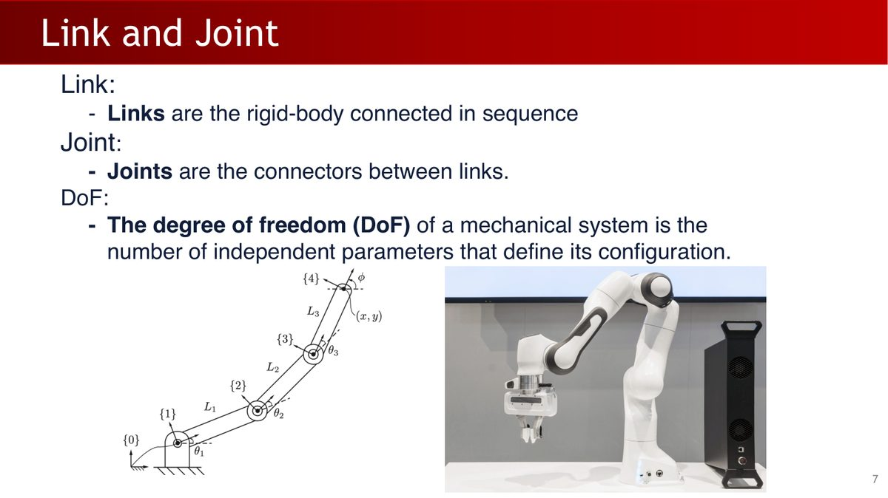
| 概念 | 定义 | 直觉 |
|---|---|---|
| 连杆（Link） | 按顺序连接的刚体（不会变形的物体） | 机械臂的「骨头」 |
| 关节（Joint） | 连接连杆的部件，决定相邻连杆之间的运动自由度 | 机械臂的「关节窝」 |
| 自由度（DoF） | 机械系统独立参数的个数，即能够自由运动的维度数 | 「能往几个方向动」 |
课件还补充了一个重要细节：关节限位（Joint Limits）——每个关节的取值受上下限约束（旋转关节以弧度计，滑动关节以米计）。运动需要遵守这些范围，这个约束在后面的运动规划（第 4 章）中会反复出现。
2刚体变换：坐标系的语言
本课程的$R_{s\to b}^s$描述把s系框架旋转到b系朝向，同时它的列是b系轴在s系的坐标，所以坐标公式是$p^s=R_{s\to b}^s p^b+t_{s\to b}^s$。可与第1章的$R_{AB}$对照：这里A=s，B=b。先写清输入系和输出系，再选择矩阵。
2.1 记法约定：标明点与参考系
描述刚体的位置和姿态，首先需要一套记法。课程的约定（课件 p9）：
- 任意点 $p$ 的位置由一个参考系 $\mathcal{F}_s$ 记录；
- 点用普通字母（如 $p$），向量用粗体字母（如 $\mathbf{v}$）；
- 写下标记录「哪个参考系」：$s$ 代表 space（空间/固定），$b$ 代表 body（本体/运动）；
- 用上标标注记录的参考系，例如 $o_b^s$ 表示「在 $\mathcal{F}_s$ 中记录的点 $o_b$」。
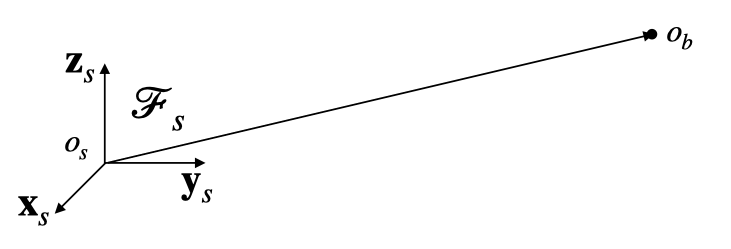
在这个约定下，一个简单的事实写成公式：
$$ o_b^s = o_s^s + \mathbf{t}_{s \to b}^s $$
即：在 $\mathcal{F}_s$ 中，点 $o_b$ 的位置 = 点 $o_s$ 的位置 + 平移向量 $\mathbf{t}_{s \to b}^s$。这个关系从原点位置出发，下一步再把坐标轴朝向写成矩阵。
2.2 刚体的位姿：旋转对齐轴，平移对齐原点
描述位姿的第一步是：给刚体绑一个坐标系 $\mathcal{F}_b$，刚体动，坐标系跟着动。那么刚体的位姿（pose，位置+姿态）变化，就可以描述为「如何变换 $\mathcal{F}_s$ 使它和 $\mathcal{F}_b$ 重合」——两步走（课件 p12）：
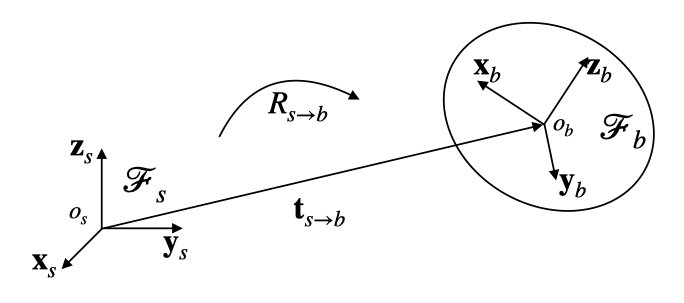
- 旋转（rotation）：用旋转矩阵 $R_{s \to b}$ 对齐坐标轴 $\{x_i, y_i, z_i\}$——代表「朝向」；
- 平移（translation）：用平移向量 $\mathbf{t}_{s \to b}$ 对齐原点 $o_s$ 和 $o_b$——代表「位置」。
$(R, t)$ 合起来完整描述一个刚体位姿，共 6 个自由度（旋转 3 + 平移 3）。
以观察者所在坐标系表示时（课件 p13），如果使用 $\mathcal{F}_s$ 记录坐标，那么 $o_s^s = 0$、$[x_s^s, y_s^s, z_s^s] = I_{3\times3}$，于是：
$$ \mathbf{t}_{s \to b}^s = o_b^s, \qquad R_{s \to b} = [\mathbf{x}_b^s, \mathbf{y}_b^s, \mathbf{z}_b^s] \in \mathbb{R}^{3 \times 3} $$
旋转矩阵$R$的三列是本体X、Y、Z轴在空间系中的坐标。$R^T$的三列则是空间系的轴在本体系中的坐标。换言之，R的每一行记录一根空间系轴在本体系中的三个分量。
2.3 换一个观察者：坐标变换公式
点$p$固定在刚体上时，其本体系坐标$p^b$不随该刚体的运动改变。把本体三根轴的贡献相加，再加上本体原点位置，就能得到空间系坐标（课件p16）：
$$ p^s = R_{s \to b}^s\, p^b + \mathbf{t}_{s \to b}^s $$
同一组$(R,t)$也可以作为主动变换，移动在空间系表示的任意点。下面$x^s$与$x'^s$均在同一s系记录，物理含义是移动点，而上一式是在两个系中表达同一个点：
$$ x'^s = R_{s \to b} x^s + \mathbf{t}_{s \to b} $$
当 $\mathbf{t} \neq 0$ 时，$x_1 + x_2$ 的变换 ≠ 各自变换之和（多出一个 $\mathbf{t}$）。这意味着：平移不能用一个 3×3 矩阵乘法表示。齐次坐标通过增加一维，将这两种运算写进同一个矩阵。
3齐次坐标与变换组合
若$T=[R,t;0,1]$，则$T^{-1}=[R^T,-R^Tt;0,1]$。例如$p^s=Rp^b+t$，先减去t再左乘$R^T$得到$p^b$。方向用末分量0的齐次向量表示，点用1，因而平移不改变方向。
上一节已经看到：旋转是线性变换（$x' = Rx$），平移是仿射变换（$x' = x + t$），在三维坐标中，旋转与平移需要分别写出。如果机械臂有 6 个关节，组合 6 次「旋转+平移」就会展开成较长的嵌套表达式。
齐次坐标（Homogeneous Coordinates）的做法：把三维点加一维变成四维（课件 p20）：
$$ \tilde{x} := \begin{bmatrix} x \\ 1 \end{bmatrix} \in \mathbb{R}^4, \qquad T_{s \to b}^s = \begin{bmatrix} R_{s \to b}^s & \mathbf{t}_{s \to b}^s \\ 0 & 1 \end{bmatrix} $$
验证一下：
$$ \begin{bmatrix} x' \\ 1 \end{bmatrix} = \begin{bmatrix} R & t \\ 0 & 1 \end{bmatrix} \begin{bmatrix} x \\ 1 \end{bmatrix} = \begin{bmatrix} Rx + t \\ 1 \end{bmatrix} $$
旋转和平移，现在都在一个 4×4 矩阵里了。这种变换保持刚体的形状和大小不变，只改变位置和方向——这正是「刚体」变换的定义。
齐次矩阵在四维向量空间中线性作用，三维点所在的末分量为1的切片上对应仿射变换。得到两条实用规则（课件p22）：
| 规则 | 公式 | 含义 |
|---|---|---|
| 组合规则 | $T_{3 \to 1}^3 = T_{3 \to 2}^3 T_{2 \to 1}^2$ | 多个变换按顺序相乘即可串联 |
| 逆变换 | $T_{2 \to 1}^2 = (T_{1 \to 2}^1)^{-1}$ | 反方向变换就是求逆 |
通用形式（课件 p21）：
$$ x^1 = T_{1 \to 2}^1 \, x^2 $$
读法是“右侧输入坐标属于2系，左侧输出坐标属于1系”。$T_{1\to2}^{1}$记录2系在1系中的位姿；同一个箭头名称在框架运动与坐标转换两种语境中方向感不同，因此应优先检查等式两边的坐标上标。
后文中我们默认都在齐次坐标下写公式，省略波浪号 $\tilde{}$。
4多连杆几何：四种关节
机械臂由连杆串成，连杆之间靠关节连接。常见的关节有四种（课件 p26-27 + 笔记）：
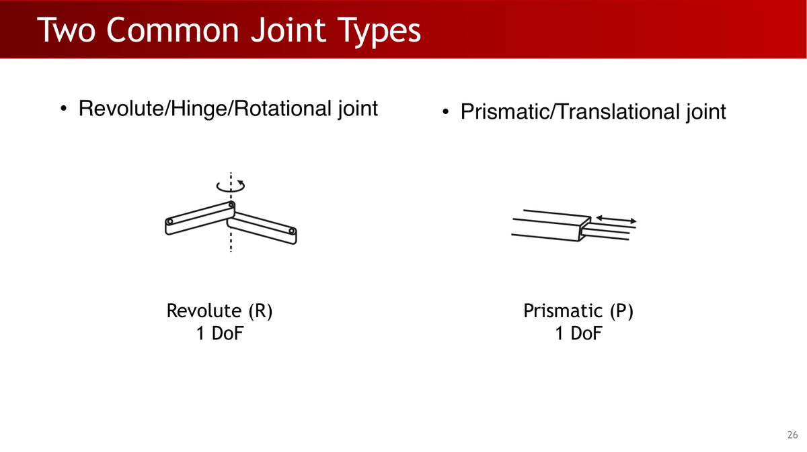
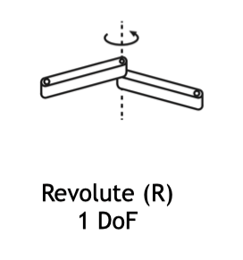
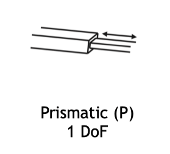
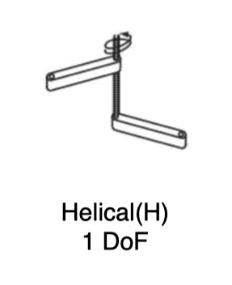
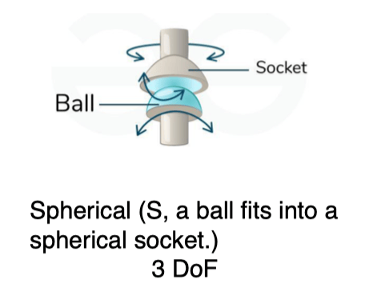
| 关节类型 | 英文名称 | 自由度 | 运动描述 |
|---|---|---|---|
| 旋转关节 | Revolute (R) | 1 | 绕单一轴线旋转 |
| 滑动关节 | Prismatic (P) | 1 | 沿单一方向平移 |
| 螺旋关节 | Helical (H) | 1 | 螺旋运动（旋转 + 平移） |
| 球形关节 | Spherical (S) | 3 | 任意方向旋转 |
基座连杆与末端执行器
一条运动链有两个特殊成员（课件 p28-30）：
- 基座连杆（Base link / Root link）：第 0 号连杆，视为「固定」参考，空间坐标系 $\mathcal{F}_s$ 附着于此；
- 末端执行器连杆（End-effector link）：最后一个连杆，通常是抓手（gripper），末端坐标系 $\mathcal{F}_e$ 附着于此。
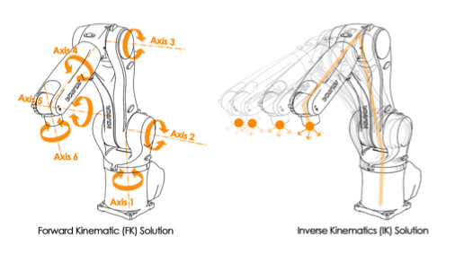
52 DoF 机械臂：动手推导变换矩阵
下面用课件的一个小机械臂例子把公式连起来：一个 2 自由度机械臂——一个旋转关节 + 一个滑动关节（课件 p29-32）。
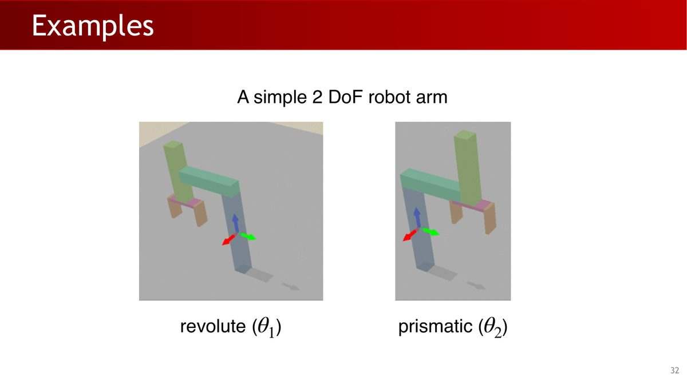
我们的任务是：写出每一对相邻连杆之间的变换矩阵，然后相乘得到「基座 → 末端」的总变换。逐对分析：
第一步：基座 → link1（旋转关节 $\theta_1$）
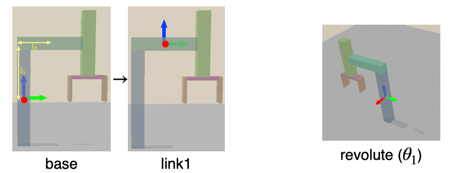
$$ T_{0\to1}^0 = \begin{bmatrix}\cos\theta_1&-\sin\theta_1&0&-l_2\sin\theta_1\\ \sin\theta_1&\cos\theta_1&0&l_2\cos\theta_1\\ 0&0&1&l_1\\ 0&0&0&1\end{bmatrix} $$
读矩阵的要点（笔记原话）：旋转部分没影响 z 轴（第三列是 $[0,0,1]^\top$，因为是绕 z 旋转）；平移部分在平面上也有变动——link1 的末端绕 $l_2$ 的左端点转了 $\theta_1$，所以 $x,y$ 平移分量是 $-l_2\sin\theta_1$ 和 $l_2\cos\theta_1$。
第二步：link1 → link2（滑动关节 $\theta_2$）
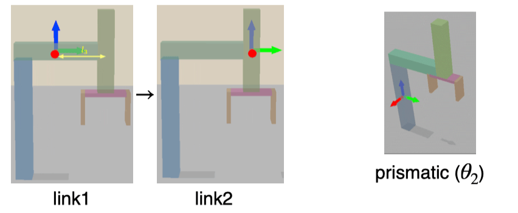
$$ T_{1\to2}^1 = \begin{bmatrix}1&0&0&0\\ 0&1&0&l_3\\ 0&0&1&\theta_2\\ 0&0&0&1\end{bmatrix} $$
滑动关节不旋转，所以旋转部分是单位阵 $I$；平移只在 $y$（固定的 $l_3$）和 $z$（关节变量 $\theta_2$）方向。
第三步：link2 → 末端执行器（固定的 $l_4$）
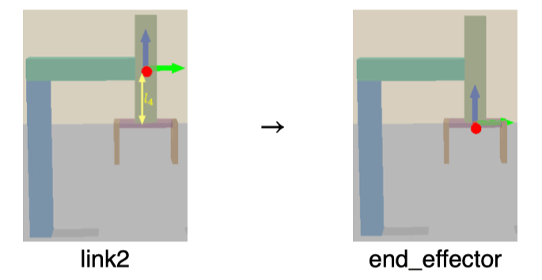
$$ T_{2\to3}^2 = \begin{bmatrix}1&0&0&0\\ 0&1&0&0\\ 0&0&1&-l_4\\ 0&0&0&1\end{bmatrix} $$
第四步：链式相乘
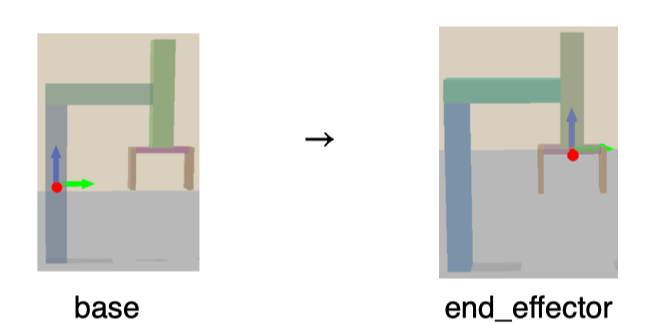
$$ T_{0\to3}^{0} = T_{0\to1}^{0} T_{1\to2}^{1} T_{2\to3}^{2} = \begin{bmatrix}\cos\theta_{1}&-\sin\theta_{1}&0&-\sin\theta_{1}(l_{2}+l_{3})\\ \sin\theta_{1}&\cos\theta_{1}&0&\cos\theta_{1}(l_{2}+l_{3})\\ 0&0&1&l_{1}-l_{4}+\theta_{2}\\ 0&0&0&1\end{bmatrix} = \begin{bmatrix}R_{s\to e}^{s}&\mathbf{t}_{s\to e}^{s}\\ 0&1\end{bmatrix} $$
① 每个矩阵只描述相邻两个连杆的关系——先求每段局部变换，再处理整条运动链；
② 总变换就是按运动链顺序矩阵相乘，这就是本例正向运动学（FK）的计算过程；
③ 最后的结果自动分块成 $[R | t]$——$R$ 是末端朝向，$t$ 是末端位置。给定 $(\theta_1, \theta_2)$ 就能算出末端在哪、朝哪。
6正运动学与逆运动学
6.1 两种「空间」：关节空间 vs 笛卡尔空间
描述末端执行器的位姿，有两种视角（课件 p38）：
| 关节空间（Joint space） | 笛卡尔空间（Cartesian space） | |
|---|---|---|
| 表示 | 关节角度向量 $(\theta_1, \theta_2, \dots, \theta_n)$ | 末端位姿 $(R_{s\to e}, t_{s\to e})$ |
| 例子 | 6 DoF 机器人：6 个数 | 旋转矩阵 + 平移向量 |
| 特点 | 反映关节的真实物理状态，强调「过程」 | 符合人类思考方式，容易判断目标是否达成，强调「末态」 |
6.2 FK：从关节到末端（简单）
正向运动学（Forward Kinematics, FK）：给定关节角度，计算末端位姿：
$$ T_{s \to e} = f(\theta) $$
对于本章固定基座、已知模型的串联机械臂，给定合法关节配置就能确定末端位姿，计算过程是沿链累乘相邻变换。闭链或浮动基座需另行处理约束及基座状态。
6.3 IK：从末端到关节（困难）
逆向运动学（Inverse Kinematics, IK）：给定目标位姿 $T_{target}$，反求关节角度：
$$ T_{s \to e}(\theta) = T_{target} $$
IK 难在三点（课件 p41）：$f$ 好算但 $f^{-1}$ 通常不好算；可能有多个解，也可能无解；即使有解也可能需要昂贵的计算。因此 IK 有多种求解方法：
- 解析法（Analytical）：直接反解 FK 方程求精确解——只对简单构型可行。判断标准是 Pieper 准则（Pieper, 1968）：6-DoF 机械臂若存在三个相邻旋转关节轴平行（或交于一点），就有闭式解。经典例子：UR5 的第 2、3、4 关节轴平行，满足 Pieper 准则。
- 数值法（Numerical）：用近似和迭代逼近解——更慢（毫秒级）但通用得多。基于雅可比矩阵的数值 IK 是主力方法。
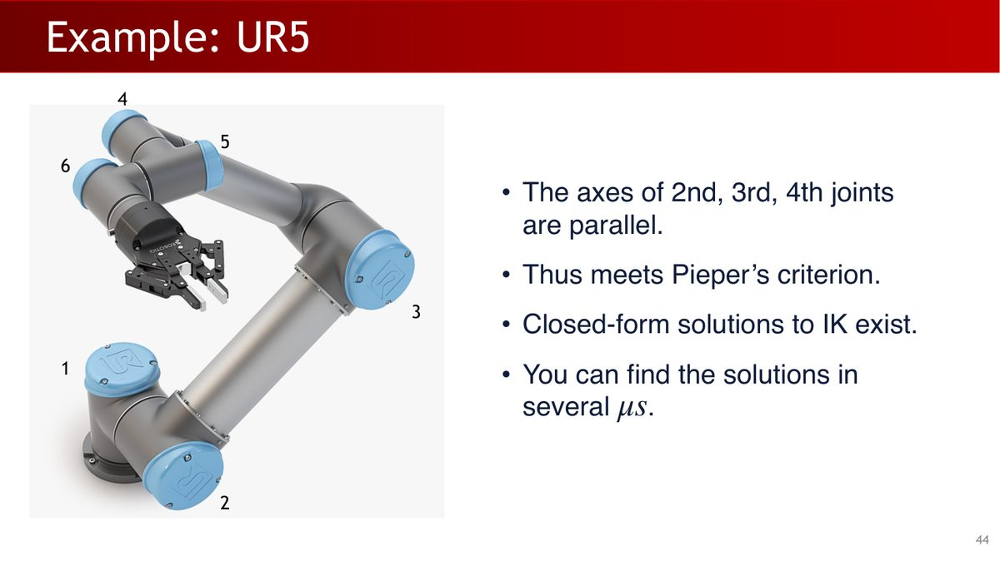
课件还介绍了一个工业级数值 IK 求解器：NVIDIA cuRobo——它的思路是把 IK 变成优化问题，并用 GPU 并行加速：
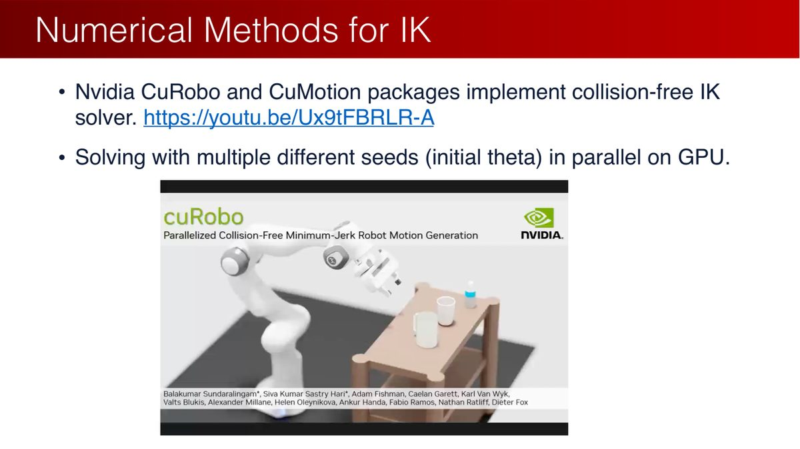
- 选定一个初始值 $\theta_0$；
- 建立位置误差、朝向误差及约束的优化目标。可写作$\min_\theta \lambda_p\|t(\theta)-t_{target}\|^2+\lambda_R d(R(\theta),R_{target})^2$，其中权重用于匹配米与弧度的尺度；齐次矩阵差仅是简化示意。
- 迭代直到收敛；
- GPU并行尝试多个初始配置，提高寻找可行解的机会。得到解后，还需检查位姿误差和约束是否满足。
cuRobo 提供 GPU 并行运动生成，cuMotion 提供与机器人软件栈的集成。规划吞吐、单次规划延迟与控制频率是不同指标；评估时应同时记录硬件、轨迹长度、批量大小和碰撞约束。比较性能时，应采用条件明确的基准数据。
6.4 为什么是 6 或 7 自由度？
三维空间中任意刚体位姿需要 6 个独立参数描述（旋转 3 + 平移 3）。因此：
- 6 DoF 是「完全自由度」：在非奇异构型下可局部满足 6 维位姿要求；目标仍须在可达工作空间内，IK 可能无解（有解时可能需数值求解；满足相应 Pieper 准则的结构可求解析解）；
- 7 DoF 是「冗余自由度」：多出 1 个自由度扩大解空间，更可能找到无碰撞的可行解（6 个自由度有解但可能全都碰撞）；
- 自由度需按任务与成本选择：更多关节扩大运动灵活性，也增加建模、控制与维护复杂度。6或7自由度是机械臂中的常见选择，其他机构和任务可采用不同数量。
6.5 应用：策略网络该在哪个空间预测动作？
第 1 章说过，VLA 模型的输出就是动作。现在可以问一个更深的问题：动作应该在关节空间还是笛卡尔空间表示？（笔记中的对比）
| 笛卡尔空间（$(\Delta R, \Delta t)$） | 关节空间（$\Delta \theta$） | |
|---|---|---|
| 预测难度 | ✅ 直观、容易预测 | ❌ 难以直接求解 |
| 执行难度 | ❌ 需要 IK 才能执行 | ✅ 直接下发关节指令 |
| 下游计算 | 目标 $(R,t)$ 由位姿合成得到；IK 求关节目标，FK 核对实际位姿 | ✅ FK 轻松算出 $(R,t)$ |
| 接口示例 | 末端相对位姿接口示例 | 关节增量接口示例 |
学习策略可以输出末端相对位姿，也可以输出关节目标，具体顺序、单位和参考系以模型与机器人的接口为准。学习给出目标后，IK、规划与反馈控制仍可承担不同环节；执行前仍需检查碰撞、限位和控制条件，并验证实际任务表现。
7SO(3) 与 SE(3)：旋转的数学空间
接下来换个视角：把「所有旋转」和「所有刚体变换」看作数学集合，理解它们的结构（课件 p48-53）。
| SO(3) | SE(3) | |
|---|---|---|
| 全称 | Special Orthogonal Group（三维特殊正交群） | Special Euclidean Group（三维特殊欧几里得群） |
| 定义 | $\mathrm{SO}(n) = \{R \in \mathbb{R}^{n\times n}: \det(R)=1,\ RR^\top = I\}$ | $\mathrm{SE}(3) = \left\{T=\begin{bmatrix}R&t\\0&1\end{bmatrix}: R\in\mathrm{SO}(3),\ t\in\mathbb{R}^3\right\}$ |
| 内容 | 所有三维旋转 | 所有三维刚体变换（旋转+平移，无缩放切变） |
| 自由度 | 3 | 6 |
拆解名字里的三个词（课件 p50-51）：
- Group（群）：粗略地说，对矩阵乘法封闭——两个旋转相乘还是旋转；
- Orthogonal（正交）：$RR^\top = I$，即列向量两两正交且长度为 1；
- Special（特殊）：$\det(R) = 1$。所有正交矩阵组成 $O(3)$，其中 $\det = -1$ 的那部分是「旋转 + 镜像」，会翻转手性；旋转矩阵是 $\mathrm{SO}(3) \subset \mathrm{O}(3)$，保证应用后手性不变。
因为我们要做参数化（Parameterization）：用一小组实数完整记录一个旋转（课件 p53）。旋转矩阵有 9 个数但只有 3 个自由度——信息冗余还自带约束。参数化的目标就是找到「局部用 3 个参数描述一个旋转」的映射 $f(\theta) = R_\theta$。接下来两节的欧拉角和轴角，就是两种最经典的参数化。
8欧拉角与万向锁
欧拉角（Euler Angles）用三个连续旋转描述任意旋转，最大的优点是直观——每个角度都有物理意义（课件 p55）。先建立画面感：
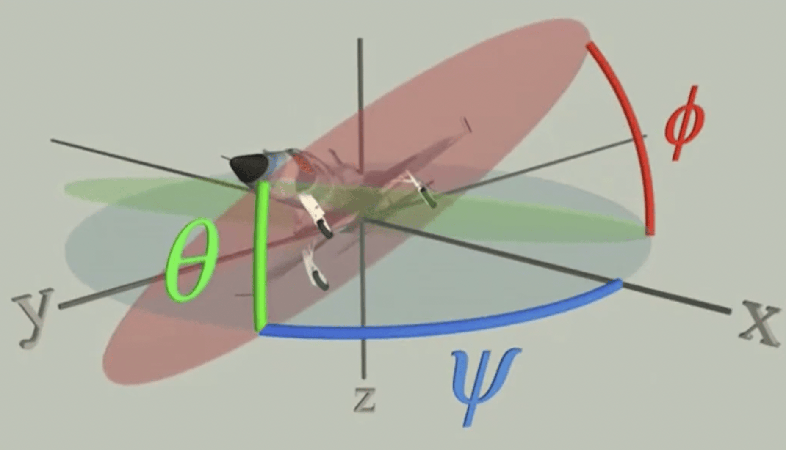
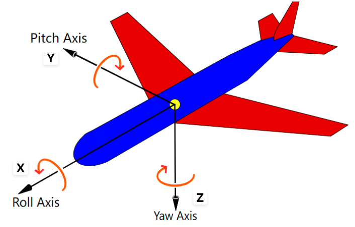
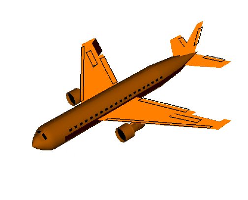
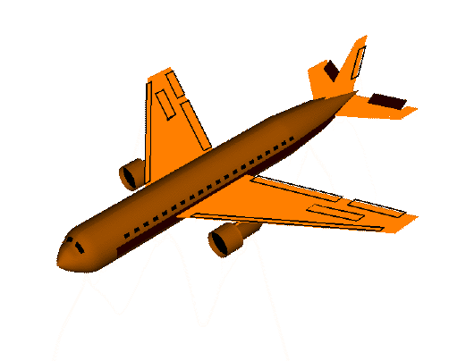
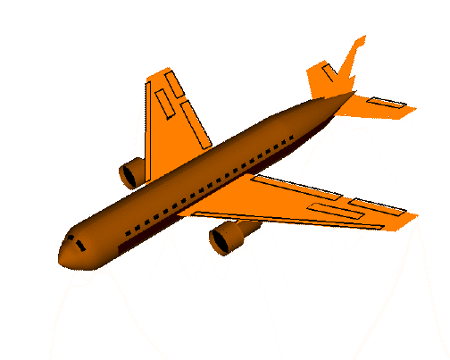
绕主轴的旋转矩阵为（课件 p57）：
$$ R_{x}(\alpha):=\begin{bmatrix}1&0&0\\0&\cos\alpha&-\sin\alpha\\0&\sin\alpha&\cos\alpha\end{bmatrix},\quad R_{y}(\beta):=\begin{bmatrix}\cos\beta&0&\sin\beta\\0&1&0\\-\sin\beta&0&\cos\beta\end{bmatrix},\quad R_{z}(\gamma):=\begin{bmatrix}\cos\gamma&-\sin\gamma&0\\\sin\gamma&\cos\gamma&0\\0&0&1\end{bmatrix} $$
本章明确采用$R=R_z(\alpha)R_y(\beta)R_x(\gamma)$。列向量下，相对于固定参考轴先转X轴$\gamma$，再转Y轴$\beta$，最后转Z轴$\alpha$；也可等价读成随动轴Z—Y—X顺序。此处$\gamma$是横滚、$\beta$是俯仰、$\alpha$是偏航，使用公式时，以这里规定的轴、顺序和角度名称为准。
使用欧拉角时，需要考虑表示不唯一与万向锁：
情况1：表示不唯一
同一个旋转矩阵可能对应多组欧拉角（课件 p58）：
$$ R_z(45°)R_y(90°)R_x(45°) = R_z(90°)R_y(90°)R_x(90°) = \begin{bmatrix}0&0&1\\0&1&0\\-1&0&0\end{bmatrix} $$
情况2：万向锁（Gimbal Lock）
当中间角$\beta=\pi/2$时，欧拉角到旋转的映射在该点退化：三个参数的微小变化只能产生两个独立旋转方向。物体仍具有三维旋转能力，出问题的是这组坐标。把角代入矩阵即可看见：
$$ R_y(\pi/2)R_x(\gamma) = \begin{bmatrix} 0 & \sin\gamma & \cos\gamma \\ 0 & \cos\gamma & -\sin\gamma \\ -1 & 0 & 0 \end{bmatrix} $$
再左乘 $R_z(\alpha)$：
$$ R = R_z(\alpha)\,R_y(\pi/2)\,R_x(\gamma) = \begin{bmatrix} 0 & -\sin(\alpha-\gamma) & \cos(\alpha-\gamma) \\ 0 & \cos(\alpha-\gamma) & \sin(\alpha-\gamma) \\ -1 & 0 & 0 \end{bmatrix} $$
结果只依赖$\alpha-\gamma$。同时增加两者相同的角度，矩阵不变；因此无法从此矩阵唯一恢复这两个角，也无法用这一点的三个局部参数方向表达全部小旋转。
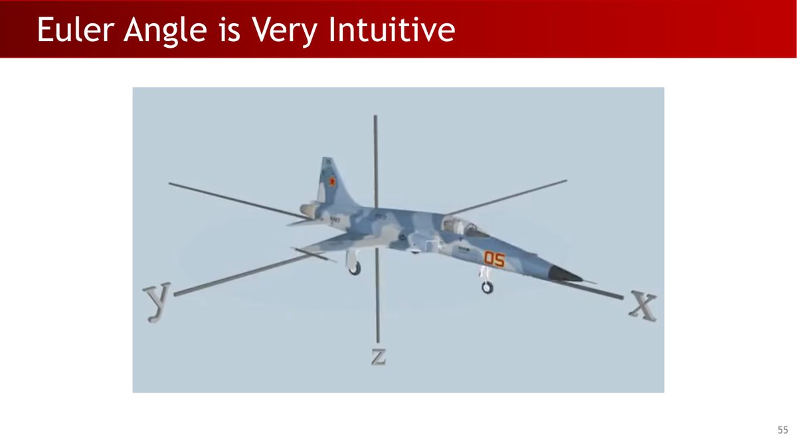
✅ 能参数化每一个旋转，可解释性强；
❌ 某些点表示不唯一；
❌ 某些点（万向锁）上，目标空间（旋转）的变化无法由源空间（欧拉角）的变化实现——旋转连续地变，欧拉角可能跳变。
三环万向架的中环转到90°时，两根转轴重合，是理解参数退化的机械类比。现代姿态估计可选用四元数等表示；实际仪表是否受影响取决于其结构与算法，分析时需分别查看。
9轴角与罗德里格斯公式
由矩阵反求轴时，$(R-R^T)/(2\sin\theta)$只适合$0<\theta<\pi$。零角的轴任意，接近半圈应从$R+I$或稳定四元数分支提取轴。计算反余弦前将输入裁剪到$[-1,1]$，对零角和半圈附近的输入，应采用对应的稳定分支。
第二种参数化从一条定理出发（课件 p62）：
任意$R\in\mathrm{SO}(3)$都能表示为绕某条单位轴$\hat\omega$转角$\theta$：$R=\mathrm{Rot}(\hat\omega,\theta)$。可选择$\theta\in[0,\pi]$；恒等旋转取零角，轴任意，半圈旋转的正反轴等价。
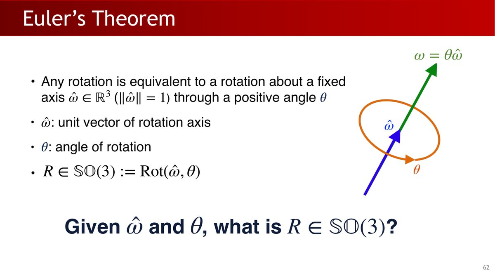
接下来的问题是：给定 $(\hat{\omega}, \theta)$，如何写出旋转矩阵 $R$？罗德里格斯公式给出这一转换。推导时先引入叉乘矩阵。
9.1 工具：叉乘矩阵（反对称矩阵）
对向量 $\mathbf{u} = [x, y, z]^\top$ 定义叉乘矩阵 $K$（课件 p63）：
$$ K = \begin{bmatrix} 0 & -z & y \\ z & 0 & -x \\ -y & x & 0 \end{bmatrix}, \qquad K\mathbf{v} = \mathbf{u} \times \mathbf{v} $$
即「左乘 $K$」和「与 $\mathbf{u}$ 叉乘」是同一回事。叉乘从二元运算变成了线性变换。
9.2 罗德里格斯公式（向量形式）
向量 $\mathbf{v}$ 绕单位轴 $\mathbf{u}$ 旋转 $\theta$ 后的结果：
$$ \mathbf{v}' = \cos\theta\,\mathbf{v} + (1-\cos\theta)(\mathbf{u}\cdot\mathbf{v})\mathbf{u} + \sin\theta\,(\mathbf{u}\times\mathbf{v}) $$
令$\mathbf v_\parallel=(\mathbf u\cdot\mathbf v)\mathbf u$，$\mathbf v_\perp=\mathbf v-\mathbf v_\parallel$。旋转后为$\mathbf v_\parallel+\cos\theta\,\mathbf v_\perp+\sin\theta(\mathbf u\times\mathbf v_\perp)$。因此沿轴分量保持不变，垂直分量在平面内转动；展开就得到上式。
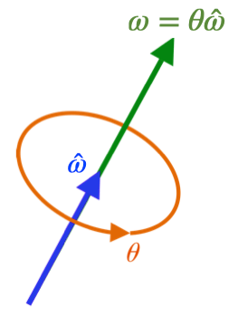
9.3 罗德里格斯公式（矩阵形式）与指数坐标
把向量形式改写为矩阵（笔记的推导，课件 p64-70 则用泰勒展开推导）：
$$ R_\theta = \cos\theta\, I + (1-\cos\theta)\,\mathbf{u}\mathbf{u}^\top + \sin\theta\, K $$
课件用矩阵指数连接这些结果：利用 $K^3 = -K$（验证：$K\mathbf{u} = \mathbf{u}\times\mathbf{u} = 0$，于是 $K^3 = K(\mathbf{u}\mathbf{u}^\top - I) = -K$），对矩阵指数做泰勒展开：
$$ \begin{aligned} e^{\theta K} &= I + \theta K + \frac{\theta^2}{2!}K^2 + \frac{\theta^3}{3!}K^3 + \cdots \\ &= I + \left(\theta - \frac{\theta^3}{3!} + \cdots\right)K + \left(\frac{\theta^2}{2!} - \frac{\theta^4}{4!} + \cdots\right)K^2 \\ &= I + \sin\theta\,K + (1-\cos\theta)K^2 = R_\theta \end{aligned} $$
因此，绕轴旋转可写成矩阵指数：
$$ \mathrm{Rot}(\hat{\omega}, \theta) = e^{[\hat{\omega}]\theta} $$
其中 $\vec{\theta} = \hat{\omega}\theta$ 称为旋转向量 / 指数坐标（exponential coordinate）——方向和轴一致，长度是旋转角。这把轴角表示与矩阵指数联系起来。
9.4 从旋转矩阵反求轴角
唯一性问题（课件 p71）：$(\hat{\omega}, \theta)$ 与 $(-\hat{\omega}, 2\pi-\theta)$ 是同一旋转；$R = I$ 时 $\theta = 0$，轴任意；$\theta = \pi$ 时（$\mathrm{tr}(R) = -1$）绕 $\pm\hat{\omega}$ 结果相同。若限制 $\theta \in (0, \pi)$，则大部分旋转的轴角表示唯一，且可反求（对罗德里格斯公式取迹即可证明）：
$$ \theta = \arccos\frac{1}{2}\big[\mathrm{tr}(R) - 1\big], \qquad [\hat{\omega}] = \frac{1}{2\sin\theta}(R - R^\top) $$
9.5 应用：旋转距离
两个姿态 $R_1$、$R_2$ 差多少？自然的度量是「从 $R_1$ 转到 $R_2$ 所需的最小旋转角」（课件 p72）。因为 $(R_2 R_1^\top) R_1 = R_2$，这个相对旋转就是 $R_2 R_1^\top$，于是：
$$ \mathrm{dist}(R_1, R_2) = \theta(R_2 R_1^\top) = \arccos\left(\frac{1}{2}\big[\mathrm{tr}(R_2 R_1^\top) - 1\big]\right) $$
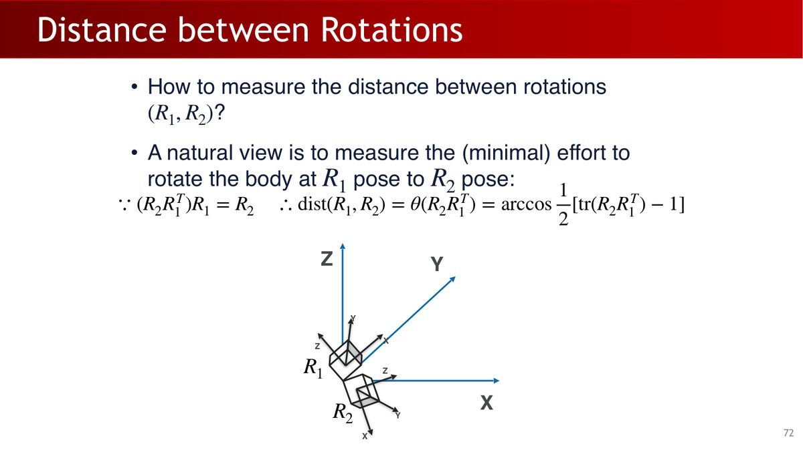
位姿估计可用最小相对旋转角衡量朝向误差：$\arccos((\mathrm{tr}(R_{pred}R_{gt}^T)-1)/2)$。训练时还要关注端点处的梯度与数值稳定性，评估时则应注明单位与容差。第5章会再次使用旋转误差。
最后留一个引子：下一章的主角四元数，与轴角表示紧密相关——它把 $\hat{\omega}$ 和 $\theta$ 打包进 4 个数，没有欧拉角的万向锁，但 $q$ 与 $-q$ 仍表示同一旋转，且运算（组合、插值）比矩阵便宜得多。
10本章小结
| 核心概念 | 一句话解释 |
|---|---|
| 刚体变换 $(R, t)$ | 旋转对齐轴 + 平移对齐原点，6 个自由度，是描述位姿的通用语言 |
| 齐次坐标 | 4×4 矩阵统一旋转+平移，链式组合 = 矩阵连乘 |
| FK / IK | FK（配置→位姿）由链式计算确定；IK（位姿→角度）多解/无解，6 DoF 可局部控制位姿但不保证可达、7 DoF 提供冗余 |
| 欧拉角 | 3 个数、直观，但存在不唯一与万向锁 |
| 轴角 / 罗德里格斯 | $R = e^{[\hat{\omega}]\theta}$，几何意义清晰，是四元数的前身 |
第 3 章把旋转表示讲到底：四元数（定义、运算、与矩阵/轴角互转、球面插值）——它是第 1 章作业 1 的主角，也是机器人工程中无处不在的旋转表示。之后第 4 章用本章的运动链知识解决「怎么动」：运动规划与 PID 控制。
11动手实践
本章没有配套的新作业（原课程作业 1 的 FK 部分正是本章内容），可以结合第1章作业1的代码完成下面三个练习，检验自己能否把公式写成计算步骤。
练习 1：实现罗德里格斯公式（10 分钟）
用 numpy 实现 9.3 节的矩阵形式，并验证「绕 z 轴转 90°」的结果：
import numpy as np
def rodrigues(u: np.ndarray, theta: float) -> np.ndarray:
"""绕单位轴 u 旋转 theta，返回 3x3 旋转矩阵"""
u = np.asarray(u, dtype=float)
if u.shape != (3,) or not np.all(np.isfinite(u)):
raise ValueError("旋转轴必须是包含三个有限数的向量")
norm = np.linalg.norm(u)
if norm == 0:
raise ValueError("旋转轴不能为零向量")
u = u / norm
K = np.array([
[0, -u[2], u[1]],
[u[2], 0, -u[0]],
[-u[1], u[0], 0],
])
return np.cos(theta)*np.eye(3) + (1-np.cos(theta))*np.outer(u,u) + np.sin(theta)*K
# 验证：绕 z 轴转 90°，x 轴应该转到 y 轴
R = rodrigues(np.array([0.,0.,1.]), np.pi/2)
x_new = R @ np.array([1.,0.,0.])
print(x_new) # 期望 ≈ [0, 1, 0]
assert np.allclose(x_new, [0, 1, 0], atol=1e-9)挑战：实现反函数——给定 $R$，用 $\theta = \arccos\frac{1}{2}(\mathrm{tr}(R)-1)$ 和 $[\hat{\omega}] = \frac{1}{2\sin\theta}(R-R^\top)$ 反解轴角，验证与输入一致。
练习2：验证课件两自由度运动链（20分钟）
本练习单独构造课件的两自由度运动链，验证相邻变换的连乘与手推位置公式。它和作业中的RobotModel.fk使用相同原理；课件模型与Galbot URDF模型不同，两者的预期数值应分别按各自模型计算。
# 取本章 2 DoF 例子的参数：theta1=30°, theta2=0.1, l1=0.5, l2=0.3, l3=0.2, l4=0.1
import numpy as np
t1 = np.deg2rad(30); t2 = 0.1
l1, l2, l3, l4 = 0.5, 0.3, 0.2, 0.1
T01 = np.array([[np.cos(t1),-np.sin(t1),0,-l2*np.sin(t1)],
[np.sin(t1), np.cos(t1),0, l2*np.cos(t1)],
[0,0,1,l1],[0,0,0,1]])
T12 = np.array([[1,0,0,0],[0,1,0,l3],[0,0,1,t2],[0,0,0,1]])
T23 = np.array([[1,0,0,0],[0,1,0,0],[0,0,1,-l4],[0,0,0,1]])
T03 = T01 @ T12 @ T23
print(T03) # 末端位置 = 最后一列的前三个数
# 对照 5.4 节的公式：t_x = -sin(t1)(l2+l3), t_y = cos(t1)(l2+l3), t_z = l1-l4+t2
expected_t = np.array([-np.sin(t1)*(l2+l3), np.cos(t1)*(l2+l3), l1-l4+t2])
assert np.allclose(T03[:3,3], expected_t, atol=1e-9)
print("✓ 与手推公式一致")练习 3：实现旋转距离（5 分钟）
def rot_dist(R1: np.ndarray, R2: np.ndarray) -> float:
"""两个旋转之间的最小旋转角（弧度）"""
return np.arccos(np.clip((np.trace(R2 @ R1.T) - 1)/2, -1, 1))
print(rot_dist(np.eye(3), rodrigues(np.array([1.,0,0]), np.pi/3))) # ≈ 1.0472 (= π/3)三个练习共约 35 分钟，全部只依赖 numpy。做完后你手上就有了「位姿变换 + 旋转表示」的最小工具库，后面章节的代码（位姿估计、抓取检测）都在这个工具箱之上构建。
附A术语表
| 术语 | 解释 |
|---|---|
| 连杆（Link） | 按顺序连接的刚体，机械臂的「骨头」 |
| 关节（Joint） | 连接连杆的部件，决定相邻连杆间的运动自由度 |
| 自由度（DoF） | 机械系统独立参数的个数 |
| 位姿（Pose） | 位置 + 姿态，刚体变换 $(R, t)$，6 个自由度 |
| 齐次坐标 | 把三维点加一维（末尾补 1），使旋转和平移统一为 4×4 矩阵乘法 |
| 正向运动学（FK） | 关节角度 → 末端位姿：沿运动链累乘变换矩阵 |
| 逆向运动学（IK） | 末端目标位姿 → 关节角度：可能多解或无解 |
| Pieper 准则 | 6-DoF 机械臂存在闭式 IK 解的充分条件（三个相邻关节轴平行或交于一点） |
| SO(3) | 三维旋转群：$\det(R)=1$ 且 $RR^\top=I$ 的 3×3 矩阵集合 |
| SE(3) | 三维特殊欧几里得群：所有刚体变换组成的集合 |
| 欧拉角 | 三个连续旋转（roll/pitch/yaw）的参数化，直观但有不唯一与万向锁问题 |
| 万向锁（Gimbal Lock） | 中间旋转角为 ±90° 时丢失一个自由度的现象 |
| 轴角表示 | 用旋转轴 $\hat{\omega}$ + 旋转角 $\theta$ 表示旋转（欧拉定理） |
| 罗德里格斯公式 | 轴角 → 旋转矩阵：$R = \cos\theta I + (1-\cos\theta)uu^\top + \sin\theta K$，等价于 $e^{[\hat{\omega}]\theta}$ |
| 叉乘矩阵 | 反对称矩阵 $K$，满足 $Kv = u \times v$ |
附B课件 73 页完整索引
原始 Lecture 2 课件共 73 页（GitHub 原文件）。下表逐页列出内容及在本教程中的位置：
| 页码 | 页面内容 | 在教程中的位置 |
|---|---|---|
| p1 | 封面：Lecture 2 - Robotics I | 封面区 |
| p2 | 课程组织：机器人学板块安排 | §1（引入） |
| p3 | 机器人学基础：运动学（刚体/关节物体）、动力学 | §1 |
| p4 | 传统机器人学大纲回顾 | §1（呼应第 1 章 §9） |
| p5 | 运动学 vs 动力学 | §1 |
| p6 | 声明：本讲借鉴 UCSD CS291-E00 | §1（蓝框） |
| p7 | 连杆、关节、自由度定义 | §1 |
| p8 | 议程：刚体变换、坐标变换、线性变换 | §2 开头 |
| p9 | 记法约定（点/向量/上标/参考系） | §2.1 |
| p10 | 刚体绑定坐标系 $\mathcal{F}_b$ | §2.2 |
| p11 | 位姿问题：如何变换 $\mathcal{F}_s$ 与 $\mathcal{F}_b$ 重合 | §2.2 |
| p12 | 先旋转对齐轴，再平移对齐原点 | §2.2 |
| p13 | 形式化：$t_{s\to b}^s = o_b^s$、$R = [x_b^s, y_b^s, z_b^s]$ | §2.2 |
| p14 | 过渡页：坐标变换 | §2.3 |
| p15 | 第二观察者：刚体上的点 $p^b$ 不变 | §2.3 |
| p16 | 变换过程：$p^s = R p^b + t$ | §2.3 |
| p17 | 作用于空间任意点：$x'^s = R x^s + t$ | §2.3 |
| p18 | 线性变换的定义 | §2.3（红框铺垫） |
| p19 | $(R,t)$ 不是线性变换（反例） | §2.3 + §3 |
| p20 | 齐次坐标定义、齐次变换矩阵 | §3 |
| p21 | 一般规则：$x^1 = T_{1\to2}^1 x^2$ | §3 |
| p22 | 组合规则与换观察者（逆变换） | §3 |
| p23 | 过渡页：多连杆刚体几何 | §4 开头 |
| p24 | 连杆与关节（复习） | §4 |
| p25 | 关节限位与自由度 | §1（关节限位） |
| p26 | 两种常见关节：旋转（1 DoF）与滑动（1 DoF） | §4 |
| p27 | 其他关节：球形（3 DoF）、螺旋（1 DoF） | §4 |
| p28 | 基座连杆：第 0 号连杆，$\mathcal{F}_s$ 附着 | §4 |
| p29 | 例子：2 DoF 机械臂 | §5 |
| p30 | 基座连杆与末端执行器连杆 | §4 |
| p31 | 例子：base → link1 → link2 → end_effector | §5 |
| p32 | 例子：2 DoF 机械臂（旋转 $\theta_1$ + 滑动 $\theta_2$） | §5 |
| p33 | 绕 z 轴的旋转矩阵 $R_z(\gamma)$ | §8（铺垫） |
| p34 | 例子的 $T_{0\to1}^0$ | §5（第一步） |
| p35 | 例子的 $T_{1\to2}^1$ | §5（第二步） |
| p36 | 例子的 $T_{2\to3}^2$ | §5（第三步） |
| p37 | 运动学方程：$T_{0\to3}^0$ 连乘结果 | §5（第四步） |
| p38 | 构型参数化：关节空间 vs 笛卡尔空间 | §6.1 |
| p39 | 正向运动学定义 | §6.2 |
| p40 | 逆向运动学定义 | §6.3 |
| p41 | IK 难点：$f^{-1}$ 难、多解/无解、计算昂贵 | §6.3 |
| p42 | IK 解法分类：解析法 vs 数值法 | §6.3 |
| p43 | Pieper 准则（Pieper, 1968） | §6.3 |
| p44 | UR5：2/3/4 关节轴平行，满足 Pieper 准则 | §6.3 |
| p45 | 数值 IK：基于雅可比矩阵（附 UCSD 参考） | §6.3（数值法） |
| p46 | NVIDIA CuRobo / CuMotion：GPU 并行 IK | §6.3 + 工程说明 |
| p47 | 关节空间与笛卡尔空间的运动关系（两个问题） | §6.5 |
| p48 | 过渡页：SO(3) 和 SE(3) | §7 开头 |
| p49 | 主题：三维空间中的旋转 | §7 |
| p50 | SO(n) 定义（正交、特殊、群） | §7 |
| p51 | SE(3) 定义（6 DoF） | §7 |
| p52 | 为什么需要理解 SO(3)/SE(3)：参数化 | §7（绿框） |
| p53 | 参数化：寻找 $\mathbb{R}^d$ 与 SO(3) 的映射 | §7（绿框） |
| p54 | 主题页：欧拉角 | §8 开头 |
| p55 | 欧拉角非常直观（飞行器配图） | §8 |
| p56 | 欧拉角（配图） | §8（画廊） |
| p57 | 绕主轴旋转矩阵 + $R = R_z R_y R_x$ | §8 |
| p58 | 问题 1：欧拉角不唯一（数值例子） | §8（坑 1） |
| p59 | 问题 2：万向锁（推导结果） | §8（坑 2） |
| p60 | 欧拉角总结 | §8（黄框） |
| p61 | 主题页：轴角参数化 | §9 开头 |
| p62 | 欧拉定理：任意旋转 = 绕轴 $\hat{\omega}$ 转 $\theta$ | §9 |
| p63 | 反对称矩阵 / 叉乘矩阵 $[a]$ | §9.1 |
| p64-67 | 给定 $(\hat{\omega},\theta)$ 求 $R$：罗德里格斯推导过程 | §9.3（推导） |
| p68 | 矩阵指数定义与罗德里格斯公式 | §9.3 |
| p69 | 旋转向量 / 指数坐标 $\vec{\theta} = \hat{\omega}\theta$ | §9.3 |
| p70 | 罗德里格斯公式总结（$[\hat{\omega}]^3 = -[\hat{\omega}]$） | §9.3 |
| p71 | 唯一性问题与反求公式（trace 法） | §9.4 |
| p72 | 旋转距离 $\mathrm{dist}(R_1,R_2)$ | §9.5 |
| p73 | 结尾页：下集预告 Lecture 3 - Robotics II | 页脚（下一章预告） |
附C参考资源
- 课程官网：pku-epic.github.io/Intro2EAI_2025
- 本教程素材来源仓库：zhuozhiyongde/Embodied-Artificial-Intelligence-2025Spring-PKU（含全部课件、笔记、作业，部分大文件需安装 Git LFS 克隆）
- 本章课件：
Slides/Lecture02_02_24.pdf（73 页） - 本章笔记原文：
Notes/02-Robotics-I.md
延伸阅读
- Krasjet《Quaternion》：四元数入门材料，第 2 节讲三维旋转（下一章预习）
- UCSD CSE291-E00（本讲课件的来源课程）
- 数值 IK 基础：UCSD CSE169 第 8、9 讲（雅可比矩阵法）
- cuRobo 文档：curobo.org（IK 与运动规划，CUDA 加速）